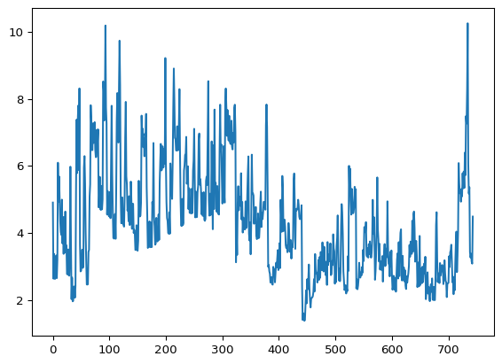

Her er øvingsopgaver som passer å gjøre etter første undervisningsøkt i kurset. Det er lov å sende mail og be om hjelp om du står fast! Eller spørre en medstudent.
Trekke ut informasjon fra datasett
a) Last ned filen “bestsellers with categories.xls” her, og les den inn med pandas.
Løsningsforslag
Vi laster ned filen og bruker df.head til å vise fram de første radene.
import pandas as pddf = pd.read_csv("data/bestsellers_with_categories.csv")df.head()
Name
Author
User Rating
Reviews
Price
Year
Genre
0
10-Day Green Smoothie Cleanse
JJ Smith
4.7
17350
8
2016
Non Fiction
1
11/22/63: A Novel
Stephen King
4.6
2052
22
2011
Fiction
2
12 Rules for Life: An Antidote to Chaos
Jordan B. Peterson
4.7
18979
15
2018
Non Fiction
3
1984 (Signet Classics)
George Orwell
4.7
21424
6
2017
Fiction
4
5,000 Awesome Facts (About Everything!) (Natio...
National Geographic Kids
4.8
7665
12
2019
Non Fiction
Hvorfor ber vi dere om å laste ned datasettet, og ikke bare hente direkte fra internett? For øve på å legge filer på fornuftige steder.
b) Behandling av data: - Datasettet har noen bøker med flere ganger. Fjern duplikatene med .drop_duplicates("Name") - Fjern navnet på boken og forfatteren fra dataen - Fjern alle bøker med mindre enn 1000 anmeldelser
Løsningsforslag
df_dropped = df.drop_duplicates("Name")print(f"Lengde på opprinnelig datasett: {len(df)}")print(f"Lengde på droppet datasett: {len(df_dropped)}")
Lengde på opprinnelig datasett: 550
Lengde på droppet datasett: 351
Så tar vi vekk de som har færre enn 1000 anmeldelser
c) Plot - Gjennomsnittlig anmeldelsesskårer for fiksjon og sakprosa - Gjennomsnittlig anmeldelsesskårer for hvert utgivelsesår. - Antall bøker for hver score - Antall anmeldelser for hver score
d) Hvor mange fiksjonsbøker fra 2017 fikk en score bedre enn 4.6?
Beregning av strømregning basert på forbruksdata og prisdata
Har du betalt rett pris for strømmen din? Last ned dette datasettet som inneholder strømavlesninger fra en adresse i oslo-området i desember 2024. Alle som har et strømabonnement i Norge kan laste ned sine forbruksdata fra Elhub.
a) Plott strømforbruket som funksjon av tid.
import pandas as pdimport matplotlib.pyplot as pltdf_forbruk = pd.read_csv("data/meteringvalues-dec-2024.csv", sep=";", decimal=",")plt.plot(df_forbruk['KWH 60 Forbruk'])

b) Vi kan så hente prisdata fra Nordpool. Vi har lastet ned prisene for desember 2024 for dere her.
Hvordan hentet vi data fra nordpool?
from nordpool import elspotimport datetimeprice_list = []prices_spot = elspot.Prices(currency="NOK")for i inrange(1, 32): entry = prices_spot.hourly(end_date=datetime.datetime(2024, 12, i), areas=['NO1'], ) price_list.append(entry)
Så henter vi ut den delen av informasjonen som vi er interessert i og lagrer som csv-fil.
import pandas as pdclean_list = []for element in price_list: clean_list += element["areas"]["NO1"]["values"]df_pris = pd.DataFrame(clean_list)df_pris.to_csv("data/nordpool-dec-24.csv")
Hva er spotpriskostnaden for strømforbruket i desember 2024?
Løsningsforslag
df_pris = pd.read_csv("data/nordpool-dec-24.csv")df_forbruk = pd.read_csv("data/meteringvalues-dec-2024.csv", sep=";", decimal=",")nettopris =sum(df_forbruk['KWH 60 Forbruk']*df_pris["value"])/1000med_moms = nettopris*1.25print(f"Spotpris på strømmen inkl. moms er {med_moms:.2f} kr")
Spotpris på strømmen inkl. moms er 2899.55 kr
Merk at vi la på moms i omregningen fra nordpool-priser til egen beregnet pris for strømforbruket, derav gange med 1.25
c) For å komplisere saken videre, har staten innført strømstøtte. I 2024 dekket staten 90 % av den delen av strømprisen som var over 73 øre eks moms. Hvor mye strømstøtte kommer denne kunden til å få?
Tips: Lag først en funksjon som konverterer strømpris til strømpris med strømstøtte.
Løsningsforslag
import numpy as npdef strømstøtte(pris):# Antar pris i kroner if pris <=0.73: return0else: return (pris-0.73)*0.9df_pris["value"]strømstøtte(0.753)strømstøtte_sats = np.array([strømstøtte(pris) for pris in df_pris["value"]/1000])strømstøtte =sum(df_forbruk['KWH 60 Forbruk']*strømstøtte_sats)print(strømstøtte*1.25)
840.7654382812502
d) Vi kan så se om vi klarer å finne en sammenheng mellom strømforbruk og utetemperatur. Du kan hente data fra meteorologisk institutt sitt frost-API. Først oppretter du en bruker her (det går superfort). Så kan du hente data med følgende python-kode:
e) Om du lusker rundt på denne adressen, vil du kanskje finne en ganske ny varmepumpe. Kan du med informasjon om strømforbruk og temperatur fastslå omtrent når denne ble installert?